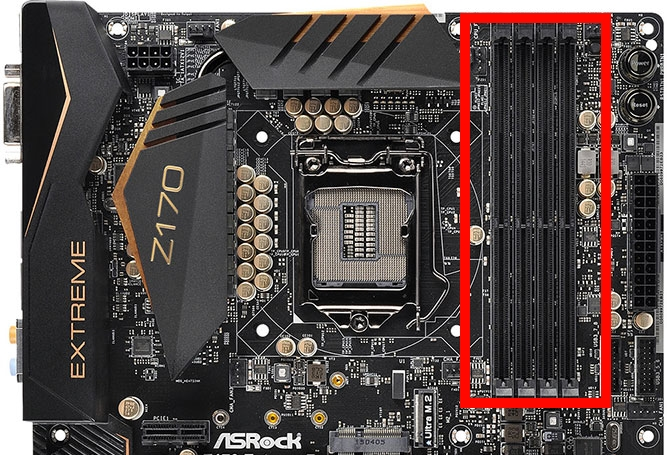

Installing the RAM!
The RAM is even easier to install than the power supply, but it has more risk involved.
No tools are needed for this process.
This will only require you to put pressure on the motherboard. Otherwise, this process is extremely easy!

Click any images on this page to open them in a separate tab/window for better viewing.
Steps:

- Push open the latches on the RAM slots (highlighted in red in the image to the right). They just push downward.
- Take your RAM stick(s) and line up the notch in the stick with the notch in the slots on the motherboard (see image to the left).
- Press the RAM stick down, starting at one end, then pressing the other end down. As you do this, the latches should close with a slight "click".
- That's all there is to it!
Once again, be careful with how much pressure you apply to the board. It doesn't take much to install the RAM, only enough to make the latches close.